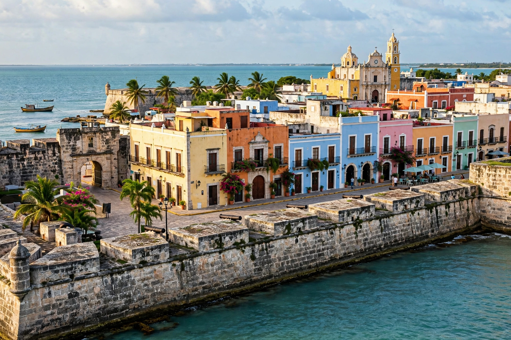

Campeche is one of the 31 states of Mexico, located on the western coast of the Yucatán Peninsula on the Gulf of Mexico. Its capital and largest city is San Francisco de Campeche, a fortified colonial port and UNESCO World Heritage Site.
| Campeche | |
|---|---|
 | |
| Country | Mexico |
| Capital | San Francisco de Campeche |
| Area | 57,924 km² |
| Population | c. 928,000 (2020) |
The region was part of the Maya world, with major sites including Calakmul, Edzná and Jaina. Spanish conquistadors landed in 1517; the capital was founded in 1540. Because of pirate attacks, the city was walled in the late 17th and 18th centuries. Campeche became a separate state in 1863, split from Yucatán. Offshore oil fields in the Bay of Campeche, notably Cantarell, made it a major petroleum producer in the late 20th century.
Mostly flat limestone lowland and tropical forest, including the Calakmul Biosphere Reserve, the state is relatively sparsely populated. Its economy combines oil, fishing (shrimp), agriculture and tourism.
Recreated from memory.